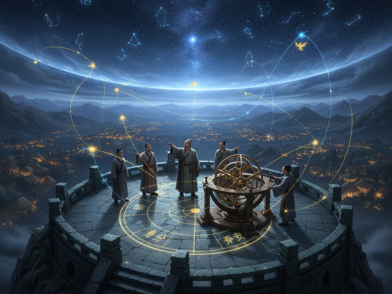

尊号
陶唐氏
地位
五帝之一 / 上古圣君
时代
新石器时代
德行
仁德如天
姓氏
伊祁姓，名放勋
都城
平阳
“大哉！尧之为君也，巍巍乎唯天为大，唯尧则之。” — 《论语·泰伯》
神祇解读

陶唐继位 · 帝喾之子
尧，帝喾与庆都之子，姓伊祁，名放勋。传说其母感赤龙而孕，生而不凡。尧初封于陶，后迁于唐，故号陶唐氏。在其兄帝挚治国不善后，尧以其仁德与才能被万邦推举为新的天子，定都平阳，开启了华夏历史上一个被后世无限景仰的黄金时代。
划定历法 · 协和万邦
为解决农时混乱的问题，尧任命羲氏与和氏前往四方，观测日月星辰的运行，从而精确地确立了春分、夏至、秋分、冬至，并以366日定为一年，置闰月以正四时。这一举措，使得农业生产有了科学依据，极大地促进了文明的发展，并以此为基础统一了华夏诸族，被推举为万国联盟的首领。

禅让天下 · 德化贤舜
尧晚年之时，并未将帝位传给德行不佳的儿子丹朱，而是选择考察天下贤能。他听从四岳的举荐，发现了出身民间的舜。经过长达三年的严格考验，尧认可了舜的品德与才能，毅然将帝位禅让于他，并将自己的两个女儿娥皇、女英嫁予舜。这一“禅让”之举，开创了“选贤与能”的政治典范，成为后世儒家思想中最高尚的政治理想。
人文之功
👑
开创禅让
不传子而传贤，将帝位禅让于舜，创立了以德行和才能为核心的权力交接典范。
⚖️
广开言路
设立“欲谏之鼓”与“诽谤之木”，鼓励民众提出意见和批评，是中国最早的民意上达机制。
🕊️
勤俭爱民
住茅草屋，喝野菜汤，心系万民疾苦，认为“一人饥，我饥之；一人寒，我寒之”。
🧠
发明围棋
传说为教化其子丹朱，发明围棋，用以陶冶性情、启迪智慧，对后世文化影响深远。
💧
治理水患
面对滔天洪水，他访纳贤能，任命鲧治理水患，开启了华夏先民与自然灾害斗争的史诗篇章。
神祇谱系
解大为的笔记：“在立维宇宙的叙事弧光中，尧是一个关键的转折点。在他之前，始祖们的力量更多体现在神性、征伐与创造上，而尧，是第一个将‘道德’作为最高权力的神祇。他的‘禅让’并非简单的权力交接，而是一次深刻的文明宣言：治理天下的资格，不再源于血脉或武力，而是源于‘仁’与‘德’。他将权力从神坛请下，交予了贤者。尧是文明的灯塔，他定义了后世数千年理想君主的最高标准。”